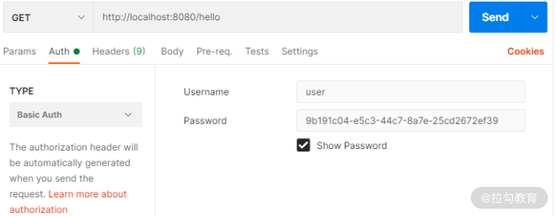
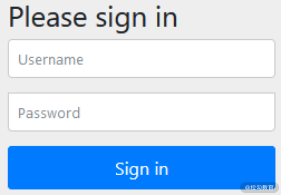
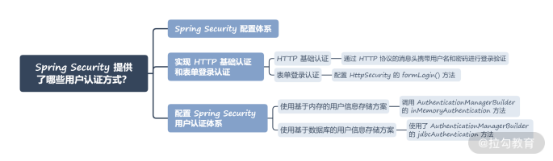

- 00 开篇词 Spring Security，为你的应用安全与职业之路保驾护航.md.html
- 01 顶级框架：Spring Security 是一款什么样的安全性框架？.md.html
- 02 用户认证：如何使用 Spring Security 构建用户认证体系？.md.html
- 03 认证体系：如何深入理解 Spring Security 用户认证机制？.md.html
- 04 密码安全：Spring Security 中包含哪些加解密技术？.md.html
- 05 访问授权：如何对请求的安全访问过程进行有效配置？.md.html
- 06 权限管理：如何剖析 Spring Security 的授权原理？.md.html
- 07 案例实战：使用 Spring Security 基础功能保护 Web 应用.md.html
- 08 管道过滤：如何基于 Spring Security 过滤器扩展安全性？.md.html
- 09 攻击应对：如何实现 CSRF 保护和跨域 CORS？.md.html
- 10 全局方法：如何确保方法级别的安全访问？.md.html
- 11 案例实战：使用 Spring Security 高级主题保护 Web 应用.md.html
- 12 开放协议：OAuth2 协议解决的是什么问题？.md.html
- 13 授权体系：如何构建 OAuth2 授权服务器？.md.html
- 14 资源保护：如何基于 OAuth2 协议配置授权过程？.md.html
- 15 令牌扩展：如何使用 JWT 实现定制化 Token？.md.html
- 16 案例实战：基于 Spring Security 和 Spring Cloud 构建微服务安全架构.md.html
- 17 案例实战：基于 Spring Security 和 OAuth2 实现单点登录.md.html
- 18 技术趋势：如何为 Spring Security 添加响应式编程特性？.md.html
- 19 测试驱动：如何基于 Spring Security 测试系统安全性？.md.html
- 20 结束语 以终为始，Spring Security 的学习总结.md.html
02 用户认证：如何使用 Spring Security 构建用户认证体系？
上一讲中，我们引入了 Spring Security 框架，并梳理了它的各项核心功能。从今天开始，我们就对这些功能一一展开讲解，首先要讨论的就是用户认证功能。用户认证涉及用户账户体系的构建，也是实现授权管理的前提。在 Spring Security 中，实现用户认证的方式有很多，下面我们就结合框架提供的配置体系进行梳理。
Spring Security 配置体系
在 Spring Security 中，因为认证和授权等功能通常都不止有一种实现方法，所以框架开发了一套完整的配置体系来对这些功能进行灵活设置。开发人员在使用认证和授权等功能时就依赖于如何合理利用和扩展这套配置体系。
例如，针对用户账户存储这个切入点，就可以设计出多种不同的策略。我们可以把用户名和密码保存在内存中，作为一种轻量级的实现方式。更常见的，也可以把这些认证信息存储在关系型数据库中。当然，如果我们使用了 LDAP 协议，那么文件系统也是一种不错的存储媒介。
显然，针对这些可选择的实现方式，需要为开发人员提供一种机制以便他们能够根据自身的需求进行灵活的设置，这就是配置体系的作用。
同时，你应该也注意到了，在上一讲的示例中，我们没有进行任何的配置也能让 Spring Security 发挥作用，这就说明框架内部的功能采用了特定的默认配置。就用户认证这一场景而言，Spring Security 内部就初始化了一个默认的用户名“user”并且在应用程序启动时自动生成一个密码。当然，通过这种方式自动生成的密码在每次启动应用时都会发生变化，并不适合面向正式的应用。
我们可以通过翻阅框架的源代码（https://github.com/spring-projects/spring-security）来进一步理解 Spring Security 中的一些默认配置。在 Spring Security 中，初始化用户信息依赖的配置类是 WebSecurityConfigurer 接口，该接口实际上是一个空接口，继承了更为基础的 SecurityConfigurer 接口。
在日常开发中，通常不需要我们自己实现这个接口，而是使用 WebSecurityConfigurerAdapter 类来简化该配置类的使用方式。而在 WebSecurityConfigurerAdapter 中我们发现了如下所示的 configure 方法：
protected void configure(HttpSecurity http) throws Exception {
http
.authorizeRequests()
.anyRequest().authenticated()
.and()
.formLogin().and()
.httpBasic();
}
上述代码就是 Spring Security 中作用于用户认证和访问授权的默认实现，这里用到了多个常见的配置方法。再次回想上一讲中我们讲到的，一旦在代码类路径中引入 Spring Security 框架之后，访问任何端点时就会弹出一个登录界面用来完成用户认证。认证是授权的前置流程，认证结束之后就可以进入到授权环节。
结合这些配置方法，我们来简单分析一下这种默认效果是如何实现的：
- 首先，通过 HttpSecurity 类的 authorizeRequests() 方法对所有访问 HTTP 端点的 HttpServletRequest 进行限制；
- 然后，anyRequest().authenticated() 语句指定了对于所有请求都需要执行认证，也就是说没有通过认证的用户就无法访问任何端点；
- 接着，formLogin() 语句用于指定使用表单登录作为认证方式，也就是会弹出一个登录界面；
- 最后，httpBasic() 语句表示可以使用 HTTP 基础认证（Basic Authentication）方法来完成认证。
在日常开发过程中，我们可以继承 WebSecurityConfigurerAdapter 类并且覆写上述的 configure() 方法来完成配置工作。而在 Spring Security 中，存在一批类似于 WebSecurityConfigurerAdapter 的配置类。
配置体系是开发人员使用 Spring Security 框架的主要手段之一，关于配置体系的讨论会贯穿我们整个专栏的始终。随着内容深度的演进，Spring Security 所提供的全面而灵活的配置功能也将一一展现在你的面前。
实现 HTTP 基础认证和表单登录认证
在上文中，我们提到了 httpBasic() 和 formLogin() 这两种用于控制用户认证的实现手段，分别代表了HTTP 基础认证和表单登录认证。在构建 Web 应用程序时，我们也可以在 Spring Security 提供的认证机制的基础上进行扩展，以满足日常开发需求。
HTTP 基础认证
HTTP 基础认证的原理比较简单，只需通过 HTTP 协议的消息头携带用户名和密码进行登录验证。在上一讲中，我们已经通过浏览器简单验证了用户登录操作。今天，我们将引入 Postman 这款可视化的 HTTP 请求工具来对登录的请求和响应过程做进一步分析。
在 Postman 中，我们直接访问http://localhost:8080/hello端点，会得到如下所示的响应：
{
"timestamp": "2021-02-08T03:45:21.512+00:00",
"status": 401,
"error": "Unauthorized",
"message": "",
"path": "/hello"
}
显然，响应码 401 告诉我们没有访问该地址的权限。同时，在响应中出现了一个“WWW-Authenticate”消息头，其值为“Basic realm="Realm"”，这里的 Realm 表示 Web 服务器中受保护资源的安全域。
现在，让我们来执行 HTTP 基础认证，可以通过设置认证类型为“Basic Auth”并输入对应的用户名和密码来完成对 HTTP 端点的访问，设置界面如下所示：

使用 Postman 完成 HTTP 基础认证信息的设置
现在查看 HTTP 请求，可以看到 Request Header 中添加了 Authorization 标头，格式为：Authorization: <type> <credentials>。这里的 type 就是“Basic”，而 credentials 则是这样一个字符串：
dXNlcjo5YjE5MWMwNC1lNWMzLTQ0YzctOGE3ZS0yNWNkMjY3MmVmMzk=
这个字符串就是将用户名和密码组合在一起，再经过 Base64 编码得到的结果。而我们知道 Base64 只是一种编码方式，并没有集成加密机制，所以本质上传输的还是明文形式。
当然，想要在应用程序中启用 HTTP 基础认证还是比较简单的，只需要在 WebSecurityConfigurerAdapter 的 configure 方法中添加如下配置即可：
protected void configure(HttpSecurity http) throws Exception {
http.httpBasic();
}
HTTP 基础认证比较简单，没有定制的登录页面，所以单独使用的场景比较有限。在使用 Spring Security 时，我们一般会把 HTTP 基础认证和接下来要介绍的表单登录认证结合起来一起使用。
表单登录认证
在 WebSecurityConfigurerAdapter 的 configure() 方法中，一旦配置了 HttpSecurity 的 formLogin() 方法，就启动了表单登录认证，如下所示：
protected void configure(HttpSecurity http) throws Exception {
http.formLogin();
}
formLogin() 方法的执行效果就是提供了一个默认的登录界面，如下所示：

Spring Security 默认的登录界面
我们已经在上一讲中看到过这个登录界面。对于登录操作而言，这个登录界面通常都是定制化的，同时，我们也需要对登录的过程和结果进行细化控制。此时，我们就可以通过如下所示的配置内容来修改系统的默认配置：
@Override
protected void configure(HttpSecurity http) throws Exception {
http
.formLogin()
.loginPage("/login.html")//自定义登录页面
.loginProcessingUrl("/action")//登录表单提交时的处理地址
.defaultSuccessUrl("/index");//登录认证成功后的跳转页面
}
可以看到，这里我们对登录界面、登录请求处理地址以及登录成功后的跳转界面进行了定制化。
配置 Spring Security 用户认证体系
讲完配置体系，现在让我们回到用户认证场景。因为 Spring Security 默认提供的用户名是固定的，而密码会随着每次应用程序的启动而变化，所以很不灵活。在 Spring Boot 中，我们可以通过在 application.yml 配置文件中添加如下所示的配置项来改变这种默认行为：
spring:
security:
user:
name: spring
password: spring_password
现在让我们重启应用，就可以使用上述用户名和密码完成登录。基于配置文件的用户信息存储方案简单直接，但显然也缺乏灵活性，因为我们无法在系统运行时动态加载对应的用户名和密码。因此，在现实中，我们主要还是通过使用 WebSecurityConfigurerAdapter 配置类来改变默认的配置行为。
通过前面的内容中，我们已经知道可以通过 WebSecurityConfigurerAdapter 类的 configure(HttpSecurity http) 方法来完成认证。认证过程涉及 Spring Security 中用户信息的交互，我们可以通过继承 WebSecurityConfigurerAdapter 类并且覆写其中的 configure(AuthenticationManagerBuilder auth) 的方法来完成对用户信息的配置工作。请注意这是两个不同的 configure() 方法。
针对 WebSecurityConfigurer 配置类，我们首先需要明确配置的内容。实际上，初始化用户信息非常简单，只需要指定用户名（Username）、密码（Password）和角色（Role）这三项数据即可。在 Spring Security 中，基于 AuthenticationManagerBuilder 工具类为开发人员提供了基于内存、JDBC、LDAP 等多种验证方案。
接下来，我们就围绕 AuthenticationManagerBuilder 提供的功能来实现多种用户信息存储方案。
使用基于内存的用户信息存储方案
我们先来看如何使用 AuthenticationManagerBuilder 完成基于内存的用户信息存储方案。实现方法就是调用 AuthenticationManagerBuilder 的 inMemoryAuthentication 方法，示例代码如下：
@Override
protected void configure(AuthenticationManagerBuilder builder) throws Exception {
builder.inMemoryAuthentication()
.withUser("spring_user").password("password1").roles("USER")
.and()
.withUser("spring_admin").password("password2").roles("USER", "ADMIN");
}
从上面的代码中，我们可以看到系统中存在“spring_user”和“spring_admin”这两个用户，其密码分别是"password1"和"password2"，在角色上也分别代表着普通用户 USER 以及管理员 ADMIN。
请注意，这里的 roles() 方法背后使用的还是authorities() 方法。通过 roles() 方法，Spring Security 会在每个角色名称前自动添加“ROLE_”前缀，所以我们也可以通过如下所示的代码实现同样的功能：
@Override
protected void configure(AuthenticationManagerBuilder builder) throws Exception {
builder.inMemoryAuthentication()
.withUser("spring_user").password("password1").authorities("ROLE_USER")
.and()
.withUser("spring_admin").password("password2").authorities("ROLE_USER", "ROLE_ADMIN");
}
可以看到，基于内存的用户信息存储方案实现也比较简单，但同样缺乏灵活性，因为用户信息是写死在代码里的。所以，我们接下来就要引出另一种更为常见的用户信息存储方案——数据库存储。
使用基于数据库的用户信息存储方案
既然是将用户信息存储在数据库中，势必需要创建表结构。我们可以在 Spring Security 的源文件（org/springframework/security/core/userdetails/jdbc/users.ddl）中找到对应的 SQL 语句，如下所示：
create table users(username varchar_ignorecase(50) not null primary key,password varchar_ignorecase(500) not null,enabled boolean not null);
create table authorities (username varchar_ignorecase(50) not null,authority varchar_ignorecase(50) not null,constraint fk_authorities_users foreign key(username) references users(username));
create unique index ix_auth_username on authorities (username,authority);
一旦我们在自己的数据库中创建了这两张表，并添加了相应的数据，就可以直接通过注入一个 DataSource 对象进行用户数据的查询，如下所示：
@Autowired
DataSource dataSource;
@Override
protected void configure(AuthenticationManagerBuilder auth) throws Exception {
auth.jdbcAuthentication().dataSource(dataSource)
.usersByUsernameQuery("select username, password, enabled from Users " + "where username=?")
.authoritiesByUsernameQuery("select username, authority from UserAuthorities " + "where username=?")
.passwordEncoder(new BCryptPasswordEncoder());
}
这里使用了 AuthenticationManagerBuilder 的 jdbcAuthentication 方法来配置数据库认证方式，内部则使用了 JdbcUserDetailsManager 这个工具类。在该类中，就定义了各种用于数据库查询的 SQL 语句，以及使用 JdbcTemplate 完成数据库访问的具体实现方法。
请你注意，这里我们用到了一个passwordEncoder() 方法，这是 Spring Security 中提供的一个密码加解密器，我们会在“密码安全：Spring Security 中包含哪些加解密技术？”一讲中进行详细的讨论。
小结与预告
这一讲我们详细介绍了如何使用 Spring Security 构建用户认证体系的系统方法。在 Spring Security 中，认证相关的功能都是可以通过配置体系进行定制化开发和管理的。通过简单的配置方法，我们可以组合使用 HTTP 基础认证和表单登录认证，也可以分别基于内存以及基于数据库方案来存储用户信息，这些功能都是 Spring Security 内置的。
本讲内容总结如下：

最后我想给你留一道思考题：你知道在 Spring Security 中有哪几种存储用户信息的实现方案吗？欢迎在留言区和我分享你的想法。